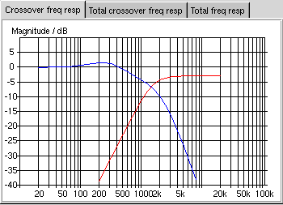

Even more advanced crossovers
In the previous chapters I have been talking a lot about the (with respect to frequency) increasing frequency response magnitude of the midrange drivers. In the crossover network you can compensate for this by adding an additional filter component in the lowpass part of the crossover. As you may know you can use an inductor as a simple 1st order lowpass filter. If we use an inductor in series with the other lowpass filter we can fix the increasing frequency response. If you select the last filter worked on in from More advanced crossovers and change the lowpass filter from 2nd order to 3rd order (as seen in figure 1) we can get to work.

Figure 1: change order to 3
If you change the first inductor from 0.89mH to 1.4mH you will see that the filter frequency response get much more slope on lower frequencies. You can see the resulting graph in figure 2.

Figure 2: more slope on lower frequencies
You should try to change the values of the different components to see how the different components affects the frequency response. Often when you design loudspeakers you measure the frequency response of the loudspeaker so that you can see what is wrong with the system. Then you try to modify the filter to handle whatever the loudspeaker does wrong. Since you can see the estimated total frequency response in GSpeakers you can get very quick feedback wheter you are changing the right components or not. Of course it would be even better to be able to measure the frequency response of a loudspeaker inside GSpeakers but that is something that will be possible in the furture.
Anyway, if you change the first inductor to